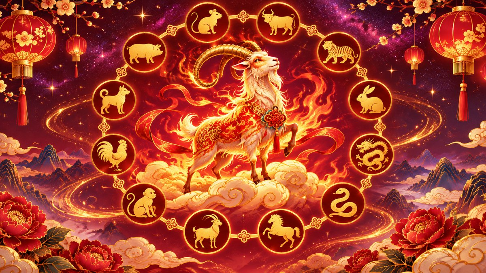

Horóscopo chino 2027: año de la Cabra (Oveja) de Fuego

El horóscopo chino 2027 no empieza el 1 de enero. El año de la Cabra (Oveja) de Fuego, 丁未 (Dīng Wèi) en el ciclo de sesenta años, corre del sábado 6 de febrero de 2027 al martes 25 de enero de 2028, según las tablas del calendario lunar del Observatorio de Hong Kong. Quien nazca entre el 1 de enero y el 5 de febrero de 2027 sigue siendo Caballo de Fuego. El 26 de enero de 2028 abre el año del Mono de Tierra.
Cabra, Oveja y Carnero traducen el mismo carácter, 羊. En este sitio usamos Cabra, como en la calculadora de horóscopo chino. El Fuego (el tronco celeste Dīng, fuego yin) añade visibilidad, calor y un poco de prisa a un animal que, de por sí, prefiere el acuerdo a la pelea. El 6 de febrero de 2027 coincide además con un eclipse anular de Sol en Acuario, una fecha que ya aparece en el horóscopo 2027 de los doce signos. Son dos calendarios distintos en el mismo día: uno lunar, otro occidental.
Tabla resumen del año de la Cabra de Fuego
| Dato | 2027–2028 |
|---|---|
| Inicio / fin | 6 de febrero de 2027 – 25 de enero de 2028 |
| Nombre chino | 丁未 Dīng Wèi (fuego yin + Cabra) |
| Festival de los Faroles | 20 de febrero de 2027 |
| Colores de suerte (tradición popular) | Rojo, naranja, púrpura; el verde (madera) alimenta el fuego |
| Números y dirección | 2, 3, 7; sur y suroeste |
| Animales más a gusto | Conejo, Cerdo, Caballo (y la Cabra, con matices) |
| En tensión con el Tai Sui | Buey (choque), Rata (daño), Perro (castigo); la propia Cabra “ocupa” el Tai Sui |
El corte de febrero: cómo saber tu animal
El error más común es leer solo el año civil. El año chino cambia con la luna nueva que abre el primer mes, no el 1 de enero. Si naciste en enero o a principios de febrero, comprueba la fecha de ese Año Nuevo antes de dar por bueno el animal. La herramienta de horóscopo chino lo cruza por ti. Abajo, los años de Cabra más cercanos y el día en que empezaron:
| Años de Cabra | Inicio del año chino | Elemento habitual |
|---|---|---|
| 1955 | 24 de enero | Madera |
| 1967 | 9 de febrero | Fuego (el anterior año de Cabra de Fuego) |
| 1979 | 28 de enero | Tierra |
| 1991 | 15 de febrero | Metal |
| 2003 | 1 de febrero | Agua |
| 2015 | 19 de febrero | Madera |
| 2027 | 6 de febrero | Fuego |
Quien nació, por ejemplo, el 3 de febrero de 1991 no es Cabra, sino Caballo: ese año el cambio cayó el 15 de febrero. En el cálculo de la carta china (BaZi) hay un matiz más: algunos maestros hacen empezar el año en el Lichun (el 4 de febrero de 2027, hacia las 09:46 en hora de Pekín). Para el horóscopo popular y el animal del año, nos quedamos con el 6 de febrero.
Tai Sui 2027: quién está en conflicto
El Tai Sui es la “estrella oficial” del año, asociada al animal que lo rige. En un año de Cabra, la tradición de feng shui popular señala varias tensiones, no una condena. El Buey choca de frente (está en el lado opuesto de la rueda). La Rata forma el par de “daño” con la Cabra. El Perro entra en el trío de castigo con Buey y Cabra. Y las personas nacidas en año de Cabra “ocupan” el mismo asiento que el Tai Sui (zhi tai sui): un año más visible, no necesariamente peor, pero sí más sensible a los excesos.
La lectura clásica pide prudencia en mudanzas, firmas grandes y peleas innecesarias, no parálisis. Simbólicamente se usan el rojo, un amuleto de Tai Sui o un gesto de respeto al inicio del año. Nada de esto sustituye una decisión práctica. Si quieres ver cómo encajan dos generaciones, la compatibilidad entre padres e hijos en el horóscopo chino compara los animales de la casa.
Colores, números y direcciones de suerte
El fuego se lleva bien con el rojo, el naranja y el púrpura, y se alimenta de la madera, de ahí el verde. El sur es la dirección del fuego; el suroeste corresponde a la rama Wèi, la de la Cabra. Los números que más se citan en la tradición popular de este año son el 2, el 3 y el 7. Tómalo como paleta, no como código: un detalle rojo en la mesa del Año Nuevo lunar o un rincón al sur vale más que una casa teñida de punta a punta.
Predicciones 2027 para los 12 animales
Lo que sigue es una lectura simbólica, de entretenimiento, según la tradición del zodiaco chino y el clima de un año de Cabra de Fuego. No predice enfermedades, muertes ni dinero garantizado. El orden es el de la rueda: Rata, Buey, Tigre, Conejo, Dragón, Serpiente, Caballo, Cabra, Mono, Gallo, Perro y Cerdo.
Rata
La Rata está en el par de daño con la Cabra, así que el año pide más tacto del habitual. En el amor, las prisas y las ironías salen caras; conviene decir lo que se quiere sin envolverlo en un chiste. En el trabajo, es un buen año para afinar sistemas y peores para imponer un cambio a toda la oficina de un día para otro. El dinero, según la tradición, se defiende mejor ahorrando un colchón que apostando a un golpe de suerte. En la salud simbólica, el punto débil es el nerviosismo y el sueño: menos pantallas tarde y más cortes reales en la agenda.
Buey
El Buey choca con el Tai Sui. No es un año para demostrar quién tiene razón a toda costa. En el trabajo, la constancia sigue siendo tu fuerte, pero los plazos ajenos pueden moverse sin aviso; deja márgenes. En el amor, la terquedad es el riesgo: una conversación incómoda a tiempo evita una trinchera de meses. El dinero pide no firmar a la ligera ni prestar lo que te dolería no recuperar. En la salud, la lectura clásica habla de no cargar con todo el peso tú solo y de revisar posturas, cuello y ritmo de descanso, siempre como higiene cotidiana, no como diagnóstico.
Tigre
El Tigre no está en el choque directo, pero el Fuego del año puede encender su ya de por sí alta temperatura. En el amor, hay química y también roce: mejor un plan claro que una pelea por orgullo. El trabajo favorece proyectos visibles y empeños que pidan coraje, siempre que no se improvisen a última hora. El dinero llega, según la tradición, más por un trabajo bien cobrado que por una apuesta. En la salud, cuida el exceso de actividad: el año caliente no pide más velocidad, pide pausas.
Conejo
El Conejo forma tríada con Cabra y Cerdo, y suele leerse como uno de los animales más a gusto en 2027. En el amor, hay terreno para arreglar un malentendido o para dar un paso que llevabas aplazando. El trabajo premia el tino y las alianzas, no el espectáculo. El dinero se lleva mejor con un presupuesto simple y alguna inversión en lo que ya funciona, no en una novedad ruidosa. En la salud, el cuerpo agradece rutinas suaves y menos autoexigencia; el año es favorable, no una excusa para ignorar el cansancio.
Dragón
Al Dragón el año de Cabra le pide bajar un punto el volumen. En el trabajo, brillas si dejas espacio a otras personas; el Fuego ya da visibilidad, no hace falta empujar cada puerta. En el amor, la generosidad funciona mejor que el teatro. El dinero: la tradición aconseja no inflar el estilo de vida porque un mes haya ido bien. En la salud, atención a la tensión de hombros y a las noches cortas después de semanas intensas. Un calendario realista evita el bajón de mediados de año.
Serpiente
La Serpiente trabaja bien en un año que premia la observación. En el amor, menos sospecha y más pregunta directa; el Fuego saca a la luz lo que ya estaba ahí. El trabajo favorece labores de análisis, mediación y oficios que pidan discreción, más que el gran anuncio. El dinero se cuida revisando suscripciones y deudas pequeñas antes de abrir una nueva. En la salud, la lectura simbólica apunta a ritmos digestivos y a no posponer revisiones rutinarias; es precaución, no un vaticinio.
Caballo
El Caballo forma armonía de seis con la Cabra, una de las lecturas más cómodas del año. En el amor, hay ganas de movimiento compartido: un viaje corto o un proyecto a dos rinde más que un discurso. El trabajo ofrece ventanas para cambiar de aire o de responsabilidades, si no se hace a la fuga. El dinero acompaña cuando el esfuerzo es constante; el riesgo es gastar en celebrar cada avance. En la salud, el cuerpo pide ejercicio que guste, no un régimen punitivo, y respeto por las lesiones pequeñas antes de que crezcan.
Cabra
Es tu año, y también el del Tai Sui. Esa doble condición se lee como un foco: más ojos encima, más sensibilidad, más necesidad de no prometértelo todo. En el amor, pide lo que necesitas sin disculparte de más; el Fuego ayuda a decirlo. El trabajo puede traer encargos visibles; elige cuáles merecen tu energía. El dinero se sostiene con un colchón y con menos gastos “porque es mi año”. En la salud, duerme y no conviertas cada invitación en una obligación. Un año propio no tiene que ser un año ruidoso.
Mono
Al Mono el clima de Cabra le sienta bien si convierte el ingenio en algo útil, no en una huida. En el trabajo, hay espacio para ideas nuevas, siempre que se entreguen y no se queden en el chiste del pasillo. En el amor, la constancia enamora más que la sorpresa continua. El dinero: evoca la tentación de un atajo; la tradición prefiere un ingreso secundario realista a una jugada rápida. En la salud, reparte la atención: no solo la mente va cansada, también el cuello y las muñecas si el día es de pantalla.
Gallo
El Gallo entra en un año menos formal de lo que le gusta, y ahí está el aprendizaje. En el trabajo, la calidad sigue siendo tu carta; el Fuego pide, además, algo de flexibilidad cuando el plan cambia. En el amor, baja un punto la crítica y sube la escucha. El dinero se lleva bien con cuentas claras y mal con compras de imagen. En la salud, la lectura habitual habla de garganta, piel y estrés por exigencia; nada de alarmas, sí de hábitos: agua, sueño, menos discusión a deshoras.
Perro
El Perro entra en el trío de castigo, así que el año pide no convertir cada diferencia en una cuestión de lealtad. En el amor, defiende lo tuyo sin hacer de abogado permanente de la relación. El trabajo premia la fiabilidad y castiga el exceso de control. El dinero está más seguro en un plan sencillo que en un favor mal medido. En la salud, la tradición recuerda no cargar con los problemas de todo el mundo: el cansancio emocional también cuenta. Pide ayuda cuando la lista de “yo me encargo” se alargue.
Cerdo
El Cerdo, en tríada con Cabra y Conejo, suele tener un año más fértil para acuerdos y para el bienestar cotidiano. En el amor, hay calor y ganas de cuidar; el exceso sería decir que sí a todo. El trabajo avanza por relaciones bien llevadas más que por un golpe de efecto. El dinero acompaña si no se diluye en caprichos encadenados. En la salud, el placer de la mesa es parte de tu estilo: la idea no es privarse, es no usar la comida como único consuelo en un año que, de hecho, te da margen para estar mejor.
Cómo usar esta guía
Lee tu animal, el de tu pareja o el de tus padres, y quédate con una idea, no con doce. Si hay tensión con el Tai Sui, traduce eso a dos o tres precauciones concretas (no firmar a ciegas, no pelear por orgullo, dormir). Si el año te es favorable, no lo conviertas en una huida hacia adelante. Para cruzar dos personas de la familia, usa la compatibilidad padres e hijos. Para el cielo occidental de 2027 —Júpiter, Saturno, el eclipse de agosto— vuelve al horóscopo 2027. Y si estás armando la noche del 31 de diciembre, las cábalas de Año Nuevo 2027 cubren el año civil; el año chino, ya lo vimos, llega el 6 de febrero.
El Festival de los Faroles, el 20 de febrero de 2027, cierra las dos semanas de fiesta, no el año. El animal sigue siendo Cabra hasta el 25 de enero de 2028.
Fuentes
- Observatorio de Hong Kong, tabla de conversión gregoriano-lunar de 2027 (año Dīng-Wèi de la Cabra).
- Las predicciones por animal son una lectura simbólica propia, a partir de la tradición del zodiaco chino (tríadas, choques y Tai Sui), no un traslado de un almanaque concreto.
El horóscopo chino es una tradición simbólica con fines de entretenimiento y reflexión. No sustituye el consejo profesional en salud, finanzas ni decisiones importantes.

Preguntas frecuentes
¿Cuándo empieza el año de la Cabra de Fuego 2027?
El sábado 6 de febrero de 2027, según las tablas del Observatorio de Hong Kong. Termina el martes 25 de enero de 2028. El 1 de enero de 2027 todavía pertenece al año del Caballo de Fuego.
¿Cabra, Oveja y Carnero son el mismo signo?
Sí. Traducen el mismo carácter chino, 羊. En Portal Místico usamos Cabra, como en la calculadora de horóscopo chino.
¿Qué pasa si nací en enero o a principios de febrero?
Puede que tu animal sea el del año anterior. El zodiaco chino no cambia el 1 de enero, sino con el Año Nuevo lunar. Lo más seguro es comprobarlo en la calculadora con tu fecha completa.
¿Qué animales están en conflicto con el Tai Sui en 2027?
Según la tradición popular, el Buey (choque), la Rata (daño) y el Perro (castigo). Las personas nacidas en año de Cabra “ocupan” el mismo asiento que el Tai Sui: un año más visible, no necesariamente peor.
¿Los nacidos en año de Cabra tendrán un año difícil?
No es una condena. Se lee como un foco: más visibilidad y más necesidad de no prometértelo todo. La tradición pide prudencia en firmas grandes y en peleas innecesarias, no parálisis.
¿Cómo sé cuál es mi animal del zodiaco chino?
Usa la calculadora de horóscopo chino del portal, que tiene en cuenta el corte de enero y febrero. La tabla de años de Cabra de este artículo ayuda, pero no sustituye la fecha exacta del Año Nuevo de tu año de nacimiento.
¿Qué te pareció este artículo? Cuéntanos tu experiencia.
¡Gracias por tu comentario!